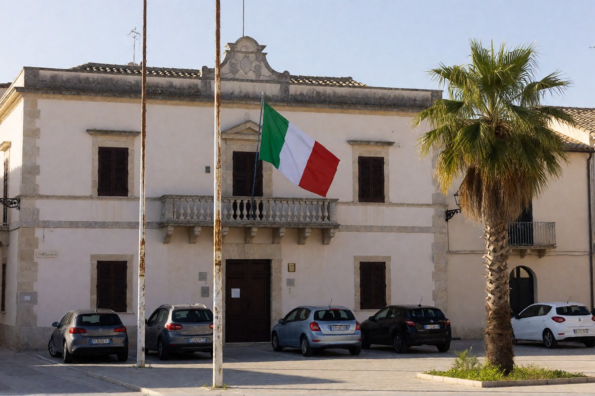

Mafia e antimafia · 20 novembre 2026
Il sindaco che non pagò: condanna definitiva a Teverola

Dopo un incidente stradale del 2019 un uomo avrebbe preteso denaro dal sindaco di Teverola, evocando ambienti della criminalità organizzata. Il sindaco non cedette. Sette anni dopo è arrivata la condanna definitiva e l'arresto.
di Franco Zanghì
Teverola, in provincia di Caserta. È il 2019 quando un incidente stradale mette di fronte due auto: su una c'è il sindaco del paese, sull'altra una familiare di un uomo del posto. Un incidente come tanti. Solo che, secondo quanto ricostruito dagli investigatori, l'auto della donna non aveva riportato alcun danno.
Eppure è da lì, sempre secondo la ricostruzione riportata dalle testate casertane, che cominciano le richieste di denaro al sindaco. Somme ingenti. E minacce sempre più insistenti, con un messaggio preciso: l'uomo avrebbe fatto capire che potevano intervenire persone riconducibili ad ambienti della criminalità organizzata.
Il sindaco, secondo le ricostruzioni, non cede. Non paga.
Sette anni dopo
Passano sette anni. Venerdì mattina, 20 novembre, gli agenti della Squadra mobile della Questura di Caserta sono andati a cercare quell'uomo, che oggi ha 55 anni, nella sua casa di Teverola.
Su di lui c'è una condanna definitiva: sei anni e sette mesi di reclusione per estorsione aggravata dal metodo mafioso, ai danni dell'ex sindaco. Dopo gli accertamenti è stato portato nel carcere di Santa Maria Capua Vetere, dove dovrà scontare la pena.
Le testate che hanno dato la notizia — fra le altre Il Mattino, CasertaNews, CasertaCE ed Edizione Caserta — non fanno il nome del condannato, né quello dell'ex sindaco, e non citano nessun clan. Qui non si aggiunge niente. E nelle fonti consultate non risultano dichiarazioni della difesa.
Perché una storia piccola conta
Non c'è stato un blitz, non c'è stata una conferenza stampa. C'è un fascicolo nato da un tamponamento e finito con una condanna definitiva, cioè con l'ultimo grado di giudizio esaurito.
Il metodo mafioso, nel codice, è l'aggravante che scatta quando la richiesta non ha bisogno di una pistola: basta far capire chi c'è dietro. È la forma più diffusa e più difficile da provare dell'estorsione, perché si fonda su una minaccia che spesso non viene nemmeno pronunciata.
In questa storia quella minaccia non ha funzionato, e ha funzionato perché qualcuno ha detto no e lo ha messo a verbale. Senza quella denuncia non ci sarebbe nessun processo e nessun arresto: ci sarebbe solo un uomo che ogni mese paga e tace.
Il punto
Un incidente stradale nel 2019, poi le richieste di soldi e le minacce. Un sindaco che non paga. E oggi una condanna definitiva a sei anni e sette mesi per estorsione aggravata dal metodo mafioso, con l'arresto della Squadra mobile di Caserta.
La giustizia è arrivata fino in fondo, anche se le è servito sette anni. E allora la domanda è questa: chi viene minacciato così trova il coraggio di dire di no, o paga per paura?
Fonti
- Il Mattino, «Caserta: estorsione all'ex sindaco di Teverola dopo incidente stradale, condannato e arrestato», 21 novembre 2026
- CasertaNews, «Estorsione all'ex sindaco: acciuffato 55enne», novembre 2026
- CasertaCE, «Minacce ed estorsione all'ex sindaco per ottenere denaro dopo l'incidente: 55enne condannato», novembre 2026
- Edizione Caserta, «Minacce mafiose all'ex sindaco dopo un incidente stradale: arrestato», 21 novembre 2026
- Caserta Focus, «Teverola, estorsione aggravata dal metodo mafioso all'ex sindaco, condannato a oltre 6 anni e mezzo e arrestato 55enne», novembre 2026
- Pupia.tv e Cronache della Campania, le ricostruzioni del 21 novembre 2026
La ricostruzione dei fatti del 2019 è quella degli investigatori, come riportata dalle testate citate. La condanna è definitiva. I nomi del condannato e dell'ex sindaco non sono stati pubblicati dalle fonti e non vengono aggiunti qui; nelle fonti consultate non risultano dichiarazioni della difesa.
Questo articolo nasce dalla pagina Gli Eroi dell'Abisso, dove la stessa storia è raccontata in video.